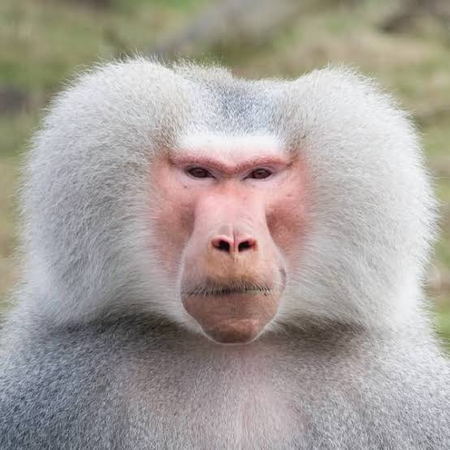
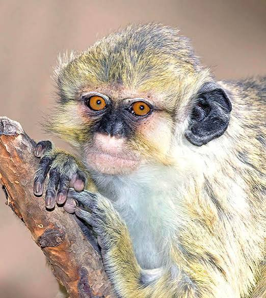
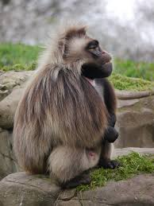
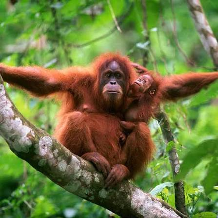
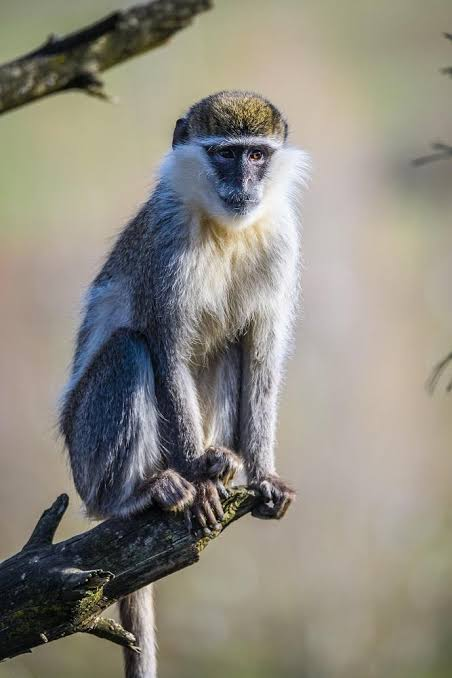

baboon

Baboon (atau babun)adalah primata berukuran besar yang termasuk dalam kelompok monyet Dunia Lama (genus Papio) dan berasal dari wilayah Afrika serta Semenanjung Arab. Mereka dikenal sebagai salah satu spesies monyet non-kera terbesar di dunia dengan ciri fisik yang sangat khas.
talapoin

Talapoin (Miopithecus) adalah genus primata yang merupakan spesies monyet Dunia Lama terkecil di dunia. Selain merujuk pada satwa liar asal Afrika Tengah tersebut, istilah ini juga digunakan sebagai nama produk perlengkapan panjat tebing dari merek Eiger.
galada

Monyet gelada (Theropithecus gelada) adalah spesies monyet Dunia Lama berukuran besar yang hanya hidup di dataran tinggi Etiopia. Meski penampilannya menyerupai babun, hewan ini bukan babun sejati dan merupakan satu-satunya spesies yang masih bertahan dari genus Theropithecus
orangutan

Orang utan (genus Pongo) adalah satu-satunya kera besar yang berasal dari Asia dan hanya hidup di hutan hujan tropis Pulau Kalimantan serta Sumatra. Satwa cerdas ini memiliki kemiripan DNA sekitar 97% dengan manusia dan berperan vital sebagai spesies kunci penyebar biji di hutan.
grivet

Grivet (Chlorocebus aethiops) adalah spesies monyet Dunia Lama asli Afrika Timur Laut yang dikenal dengan jambul rambut putih panjang di sisi wajahnya. Primata ini berkerabat dekat dengan monyet vervet dan sering disebut juga sebagai African green monkey.